Local CASP17 official-archive first baseline model1 gap viewer packet only. It copies baseline-only official archive model1/best-of-5/native-reference files into review folders and renders local overlay viewers for model-selection calibration. It is not an official CASP assessment, not strict-blind competitive proof, does not import official archive models as internal predictions, does not push remotes, and does not submit to CASP.
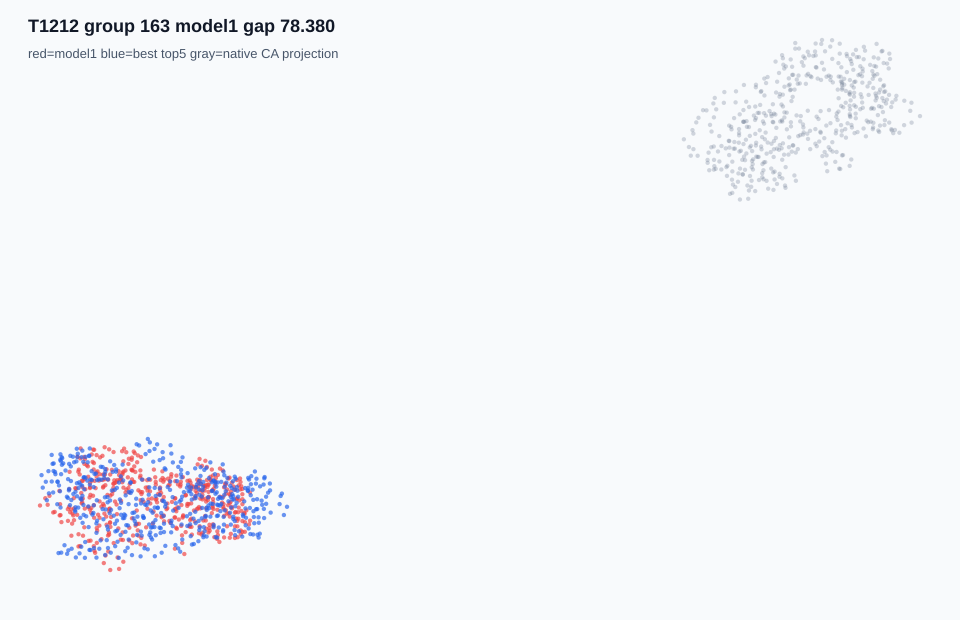
T1212 group 163
band catastrophic_model1_selection_gap
delta 78.380
model1 T1212TS163_1
best T1212TS163_4
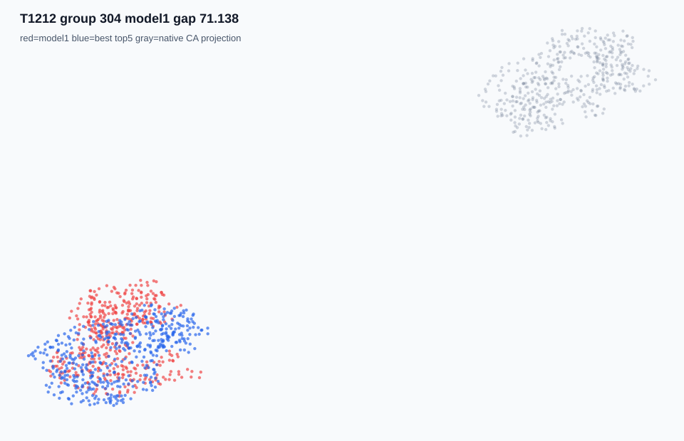
T1212 group 304
band catastrophic_model1_selection_gap
delta 71.138
model1 T1212TS304_1
best T1212TS304_3
T1212 group 286
band catastrophic_model1_selection_gap
delta 61.642
model1 T1212TS286_1
best T1212TS286_2
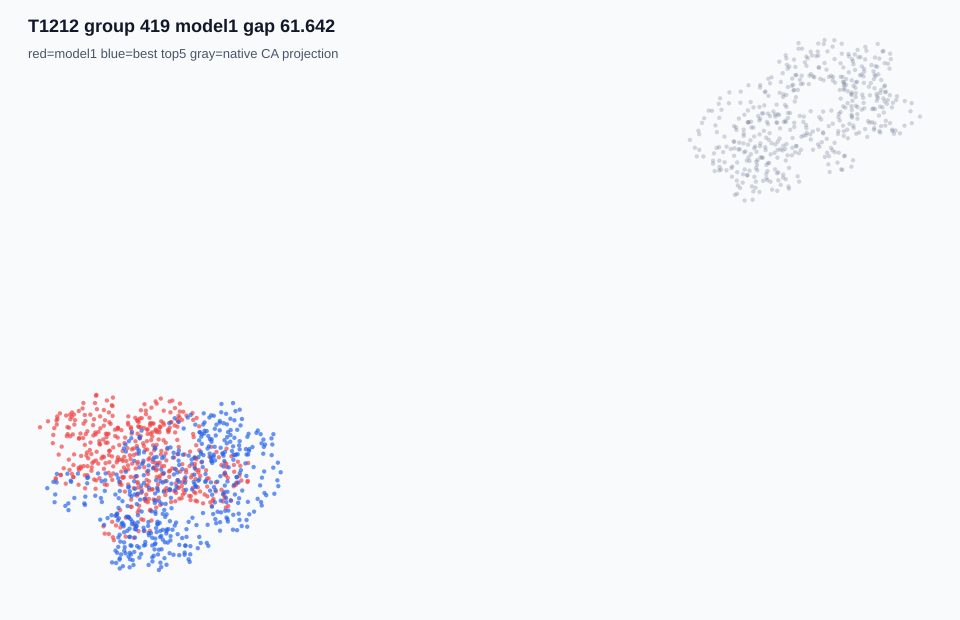
T1212 group 419
band catastrophic_model1_selection_gap
delta 61.642
model1 T1212TS419_1
best T1212TS419_2
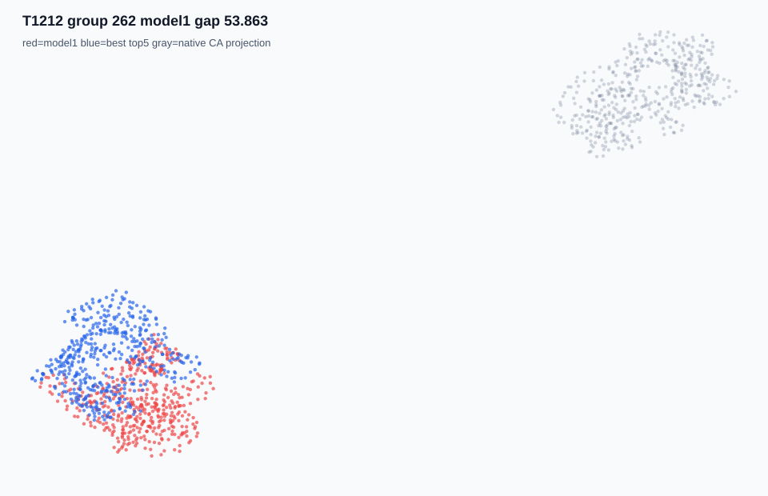
T1212 group 262
band catastrophic_model1_selection_gap
delta 53.863
model1 T1212TS262_1
best T1212TS262_5
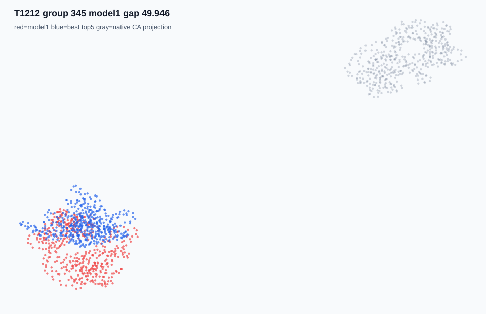
T1212 group 345
band large_selection_gap
delta 49.946
model1 T1212TS345_1
best T1212TS345_2
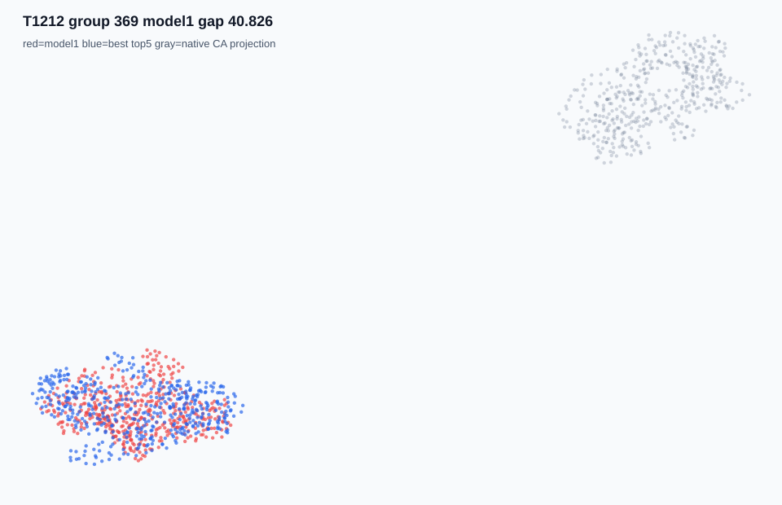
T1212 group 369
band large_selection_gap
delta 40.826
model1 T1212TS369_1
best T1212TS369_5
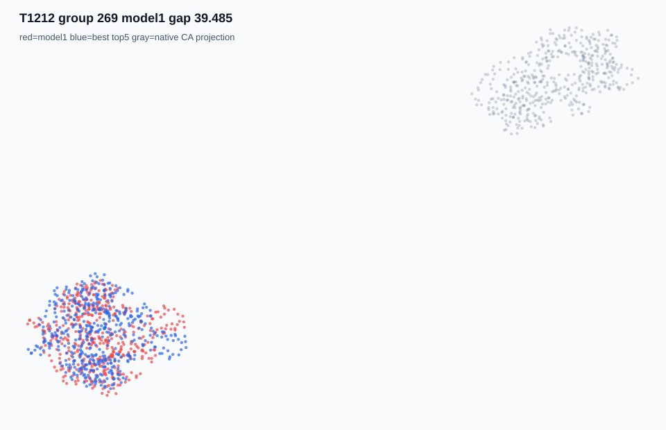
T1212 group 269
band large_selection_gap
delta 39.485
model1 T1212TS269_1
best T1212TS269_4
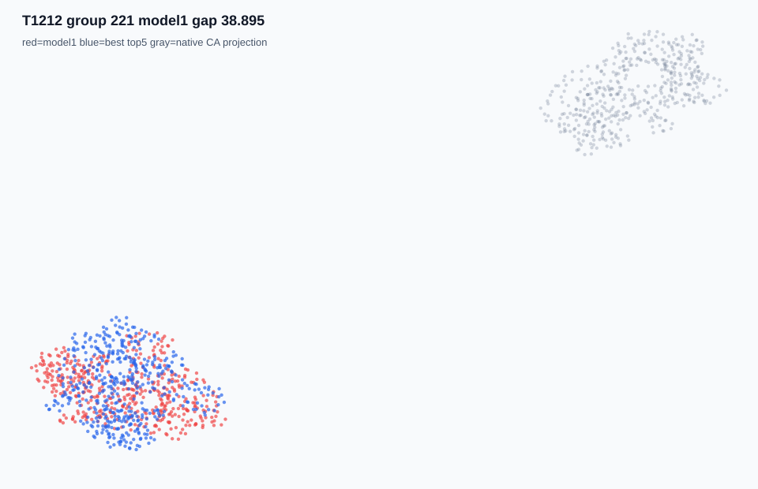
T1212 group 221
band large_selection_gap
delta 38.895
model1 T1212TS221_1
best T1212TS221_4
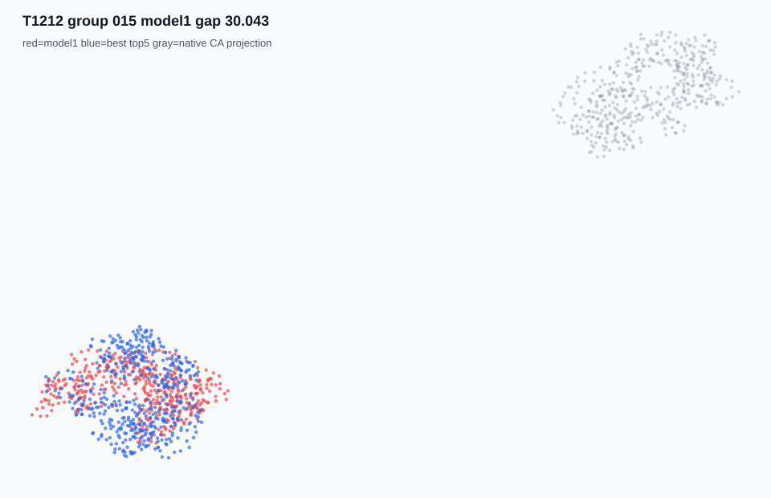
T1212 group 015
band large_selection_gap
delta 30.043
model1 T1212TS015_1
best T1212TS015_4
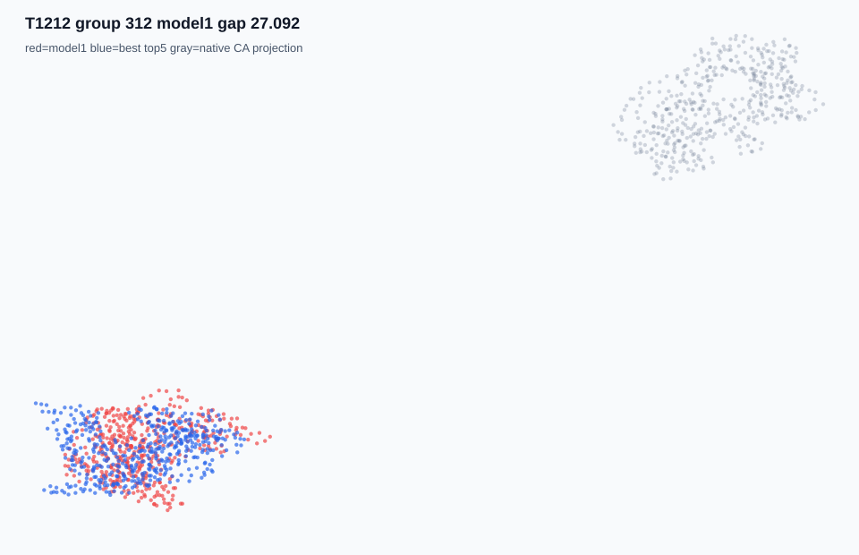
T1212 group 312
band large_selection_gap
delta 27.092
model1 T1212TS312_1
best T1212TS312_3
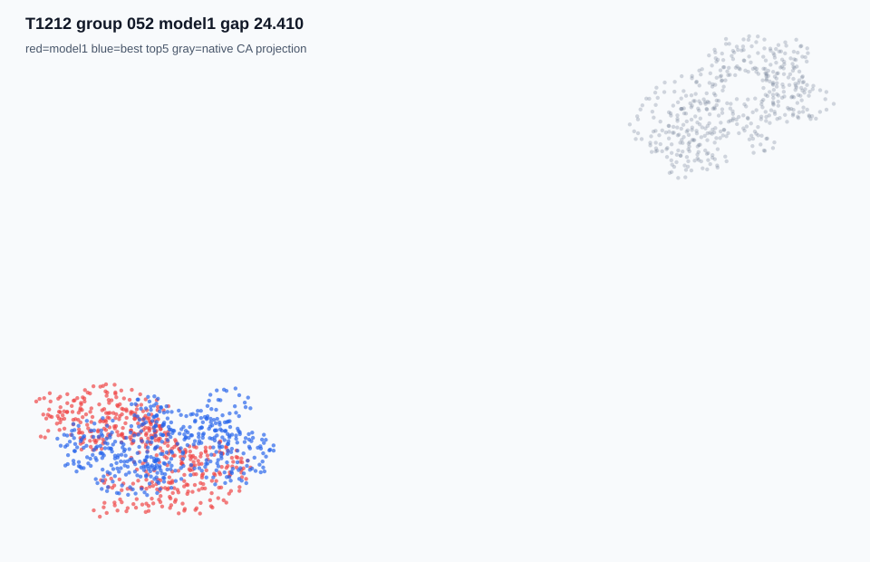
T1212 group 052
band large_selection_gap
delta 24.410
model1 T1212TS052_1
best T1212TS052_5
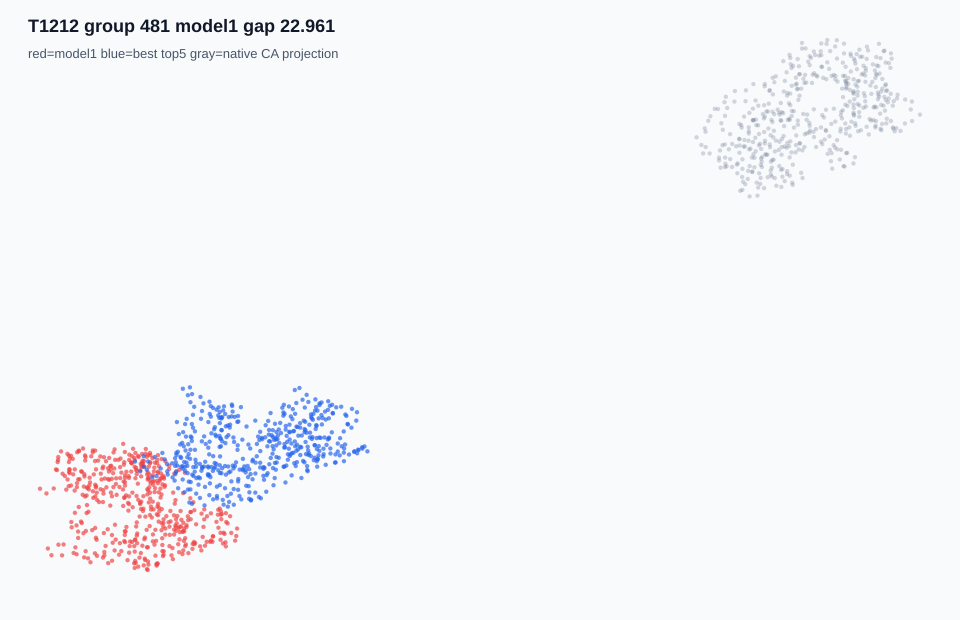
T1212 group 481
band large_selection_gap
delta 22.961
model1 T1212TS481_1
best T1212TS481_5
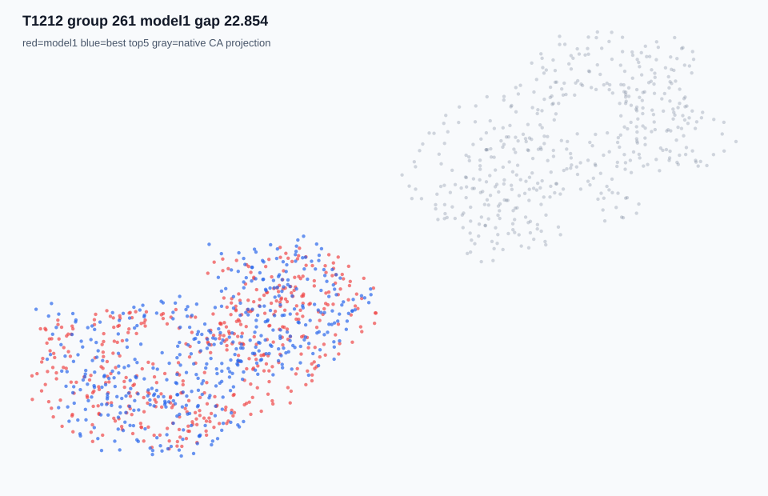
T1212 group 261
band large_selection_gap
delta 22.854
model1 T1212TS261_1
best T1212TS261_4